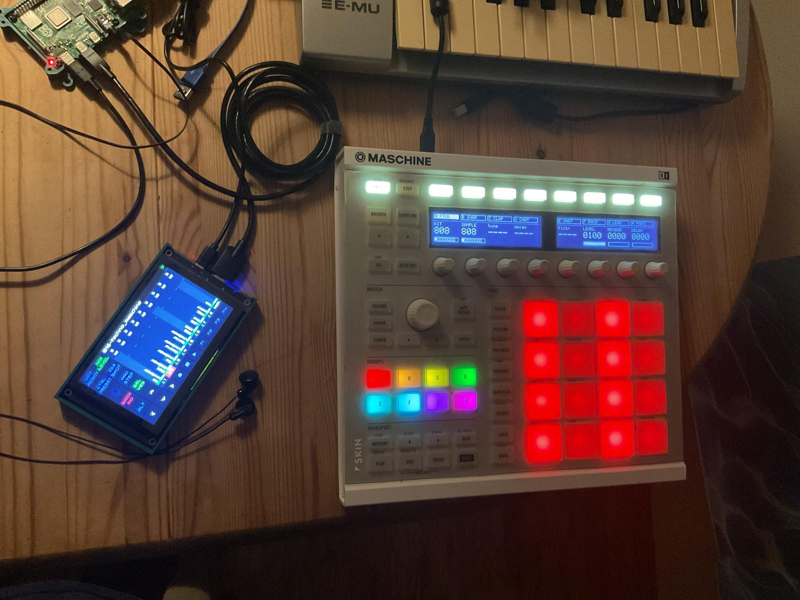
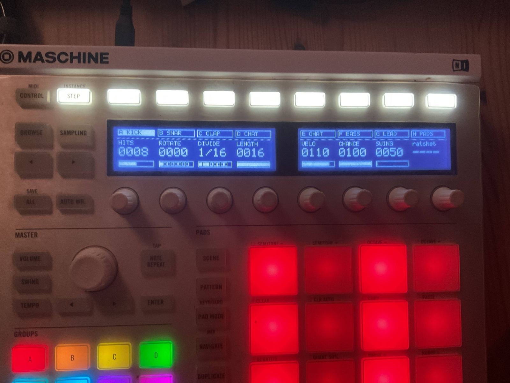
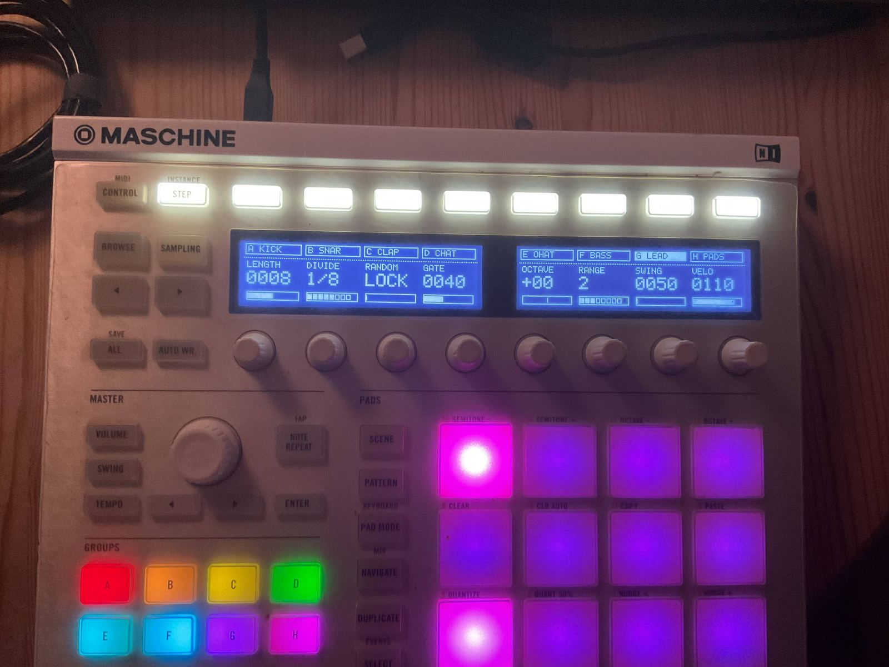

Eight-channel generative groovebox Raspberry Pi 4 · Zynthian · Maschine MK2
You steer the pattern.
You never draw it.
Five euclidean drum channels and three Turing-machine voices, all eight always alive on a Raspberry Pi 4 and a second-hand controller. You set hits, rotation and randomness; the instrument writes the notes. There is no step-entry screen to go back to.
About 180 in parts. About 40 minutes from flashing the card to first sound. No cloud, no account, no subscription.

Euclid on the drums,
a shift register on the voices
Generative is the default mode here, not a feature buried in a menu. The five drum channels are euclidean: hits spread as evenly as the grid allows, then rotate. Four hits in sixteen is four-on-the-floor; five is the clave. You turn HITS and ROTATE and listen.
Step 0 is the top-left pad. Drag a knob — the pattern is rewritten underneath you, not redrawn by hand.
The three voices are Turing machines. Each owns a shift register, clocked once per pass and mutated with probability RANDOM, and the register's value becomes pitch. Set RANDOM to zero and the loop you are hearing freezes bit for bit, for as long as you leave it there. Pick F BASS, G LEAD or H PADS and the pads stop being a beat and start being a line.
The display reads LOCK, not a numberBecause a number could be a coincidence. When randomness is zero the readout says so in a word.
- Notes are realThe driver writes into Zynthian's own sequencer, so patterns persist in snapshots and the touchscreen editor mirrors what the pads show.
- Always aliveEight channels, nothing created or torn down mid-jam. The instrument never asks a question while you are playing.
- Skill floorNo step entry, no pattern programming, no music theory. The floor is near zero; the ceiling is not.
- OverdubHold REC and play. Recording adds on top — it does not overwrite — and played-in steps light amber.
- Silence explains itselfA dashed tab means that channel is not sounding. Read the tab row before assuming a fault.
Half the bill is a controller
its maker stopped supporting
The Maschine MK2 is discontinued and out of its maker's current software. Used, it is the single largest line on the parts list — and the reason this instrument exists at all. This is scavenging, not a budget compromise: the surface is 16 pads, eight encoders, two displays and a full set of lit buttons.
The cheapest part is the computer.A Raspberry Pi 4 at 40 undercuts every module, pedal and cable on the desk. The SD card costs more than the CPU.
- Entry build
≈180— MK2, Pi 4, SD card, PSU. A complete instrument; nothing about the concept is compromised. - Headroom build
≈245— a Pi 5 instead of the Pi 4. Room for more plugins and voices. - Upgrade pathStart at 180, swap the brain later for about 60. Same SD card, same instrument, no migration.
- If it breaksA dead Pi is 40 and an SD card. No RMA, no dead instrument.
Parts list · entry build
| Maschine MK2, used | ≈100 |
| Raspberry Pi 4 | 40 |
| SD card, fast | 30 |
| Power supply | 10–15 |
| Total | ≈180 |
Prices in EUR/USD; at this scale the two track closely enough to quote as one number. The MK2 figure is a verified used price and moves with the second-hand market. Audio out is the Pi's own headphone jack — every measurement in this project was taken on it.
Forty minutes,
measured
One command. No soldering, no config files, no DAW. Ten minutes of the forty is this project's part; the other thirty is Zynthian installing itself while you make coffee.
Flash and first boot
Write the ZynthianOS image to the SD card and let the Pi come up.
bootstrap.sh
One command on the Pi. It fetches the driver, installs it and places the factory snapshot.
Playing
Load the snapshot, press play, turn HITS. That is the whole ceremony.
The first boot looks broken. It is not.Zynthian's first boot is an initialisation pass: slow, and the touchscreen misbehaves while it runs. Wait it out — this is the one step worth being warned about, so here is the warning.
Nothing here can be
switched off from outside
It is built on Zynthian, a maintained open-source synth platform with an active community and official hardware kits if a boxed version is ever wanted. Every line is readable, every part swappable, all of it yours to fork.
It cannot be discontinuedNo vendor can brick it with a firmware update or close a store it depends on. The controller it runs on was already discontinued — that is exactly why it was available.
- Cloud
----None. Nothing is uploaded. - Account
----None to create, none to lose. - Subscription
----No licence, no renewal. Buy the parts once. - Telemetry
----None. - NetworkNeeded during installation. After that it plays offline — a bunker, a train, a field.
One power supply
is the whole power story
The Pi feeds itself and the controller runs off the Pi. That is the entire cabling diagram: one supply in, one USB cable across, headphones out. Put the supply on a USB powerbank and the instrument runs on a park bench.
Two objects in a bag. Setup time is unpacking time. Hands stay on pads and encoders and the laptop stays at home — the absence of a computer is part of the point.
- Power inOne PSU, or a USB powerbank.
- Between themOne USB cable, Pi to controller.
- Audio outThe Pi's headphone jack at 48 kHz. An external interface is optional and will sound better.
- ScreenAny HDMI monitor works for Zynthian's own UI. A touchscreen is nicer to play but is not needed to install.
- It growsThe same box takes touchscreens, multitrack USB interfaces and more MIDI gear. The ceiling is the platform's ceiling.
Three photographs,
taken at the desk
Nothing here is a render. This is the instrument on a wooden desk, lit by itself.

HITS 0008 · ROTATE 0000 · DIVIDE 1/16 · LENGTH 0016 · VELO 0110 · CHANCE 0100 · SWING 0050 — the seven knobs that write the beat. The eighth reads ratchet ----: no source on this page, so it draws dashes rather than a number the encoder cannot move.
LOCK instead of 0000: the shift register is frozen and the line repeats bit for bit until you turn it back up. Pads go magenta and violet — you are on the cool half of the panel.Eight channels,
five modes, no song mode
Drums are warm colours and voices are cool, so the seam between the halves is visible on the panel without reading anything.
| Mode | What the eight encoders do |
|---|---|
| CONTROL · drum | KIT, SAMPLE, then LEVEL, REVERB, DELAY |
| CONTROL · voice | PRESET, CUTOFF, RESO, ENV, DECAY, LEVEL, REVERB, DELAY |
| STEP · drum | HITS, ROTATE, DIVIDE, LENGTH, VELO, CHANCE, SWING |
| STEP · voice | LENGTH, DIVIDE, RANDOM, GATE, OCTAVE, RANGE, DENSITY, VELO |
| ALL | ROOT, SCALE, BPM, MASTER, REVSIZE, REVTYPE, DLYTIME, DLYFBK |
| MIXER · FILTER | one control across all eight channels at once |
What it is notNo song mode, no pattern chaining, no sampling, no audio recording. It is an instrument for playing a single evolving pattern, not a workstation for arranging one. Snapshots restore a whole jam state, so the good one is not something you can lose.